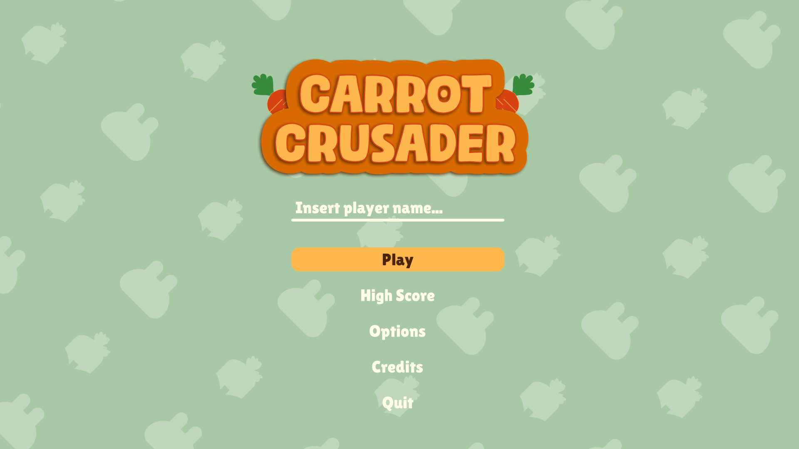
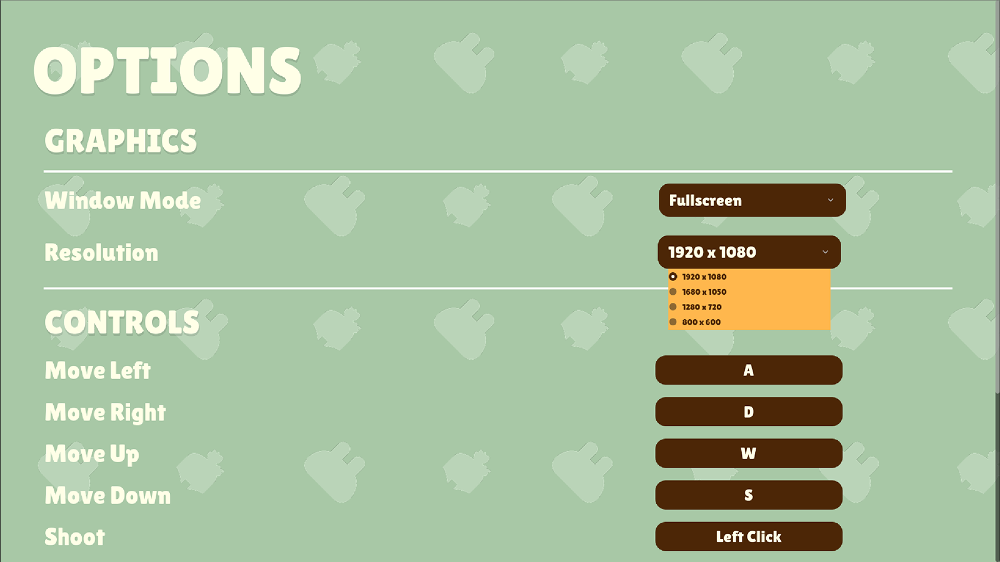
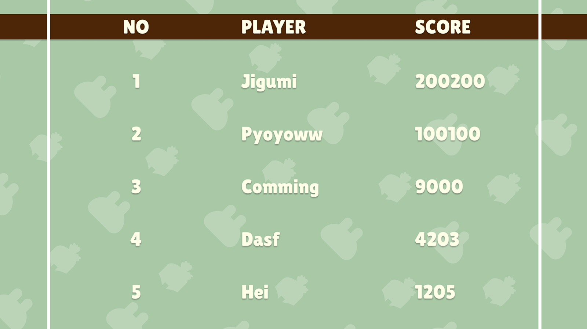
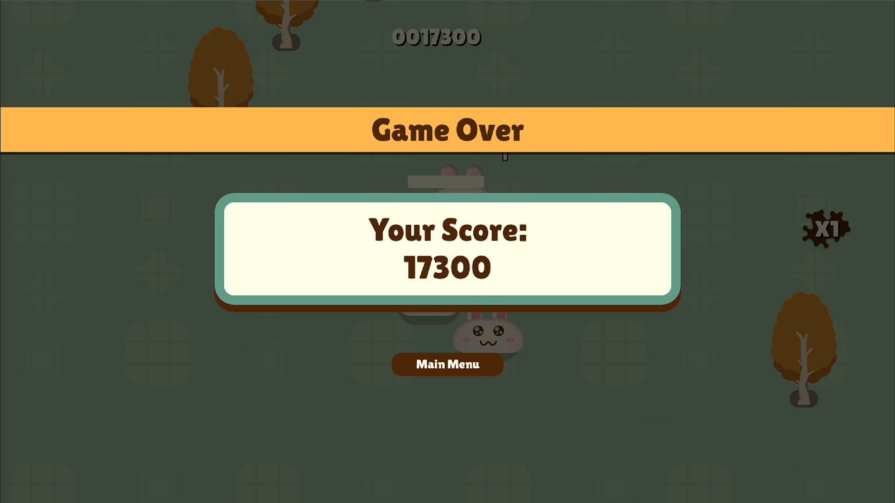

What is Carrot Crusader?
Carrot Crusader is a chaotic 2D arcade shooter where you play as a carrot knight — a helmet-wearing, bow-wielding warrior with one goal: survive the rabbit apocalypse. Waves of aggressive bunnies swarm you from all directions and the only way out is to keep shooting.
The game is built around a kill-streak multiplier system that rewards consistent play. Stay alive, don't get hit, and your score multiplier climbs from ×1 all the way to ×5. Take damage and it resets. Health packs spawn every 30 seconds to give you a fighting chance.
Gameplay




Where It Started
Carrot Crusader started as a learning project following a GDQuest tutorial on building a survivor-style game in Godot. After finishing the tutorial I wasn't satisfied with just having a clone, so I started rebuilding it piece by piece with my own twist.
The chaotic bunny-vs-carrot theme came from wanting something that felt immediately funny and readable. I looked at Brotato and Vampire Survivors for how they handled enemy swarming and score feedback, and tried to distil that into something smaller and more focused.
Challenges I Faced
Getting the enemies to swarm naturally without all clumping to the exact same point was tricky. I had to add slight offset randomness to their target position so they spread around the player rather than stacking on top of each other.
Balancing spawn rate over time without making the game feel unfair took a lot of iteration. Too slow and it felt boring, too fast and it became unplayable within the first minute.
The original tutorial codebase was functional but hard to extend. Refactoring it into something modular while keeping everything working was one of the bigger challenges of the project.
What I Learned
Small things like the red screen flash on damage, the score pop-up animation, and the sound design made a huge difference to how the game felt to play, even though mechanically nothing changed.
The most valuable part wasn't the tutorial itself but everything I had to figure out after it. Custom enemy behaviour, score systems, UI flow, and save data — none of that was in the tutorial.
This was my first serious Godot 4 project. I learned how the scene system works, how signals connect components, and how GDScript handles things differently from C#.